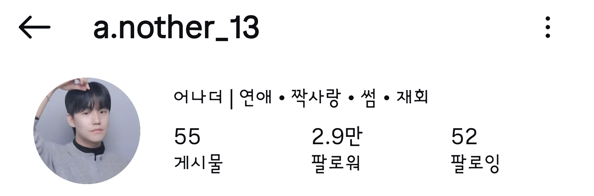

상대의 말과 행동이 계속 어긋나 보인다면, 그건 당신이 예민해서가 아닙니다. 두 사람 사이에 특정한 구조가 만들어졌고, 그 구조가 그렇게 움직이게 만들고 있는 겁니다.
지금 필요한 건 조언이 아니라 진단입니다.
위로는 오늘 밤을 버티게 해줍니다.
구조를 바꾸는 건 진단입니다.
모든 상담은 아래 세 단계를 순서대로 통과합니다. 상담자의 직관이 아니라 고정된 절차입니다.
불안형인지 회피형인지만 보지 않습니다. 회피형 안에서도 공포회피형과 거부회피형은 전혀 다른 사람이고, 필요한 대응도 정반대입니다. 이걸 구분하지 않으면 좋은 조언도 역효과가 납니다.
누가 쫓고 누가 물러나는지, 그 순환이 몇 바퀴 돌았는지, 주도권이 어느 쪽으로 얼마나 기울었는지를 특정합니다. 위치가 확정되어야 다음 행동이 나옵니다.
연락 텀, 답장의 온도, 만남의 밀도, 언제 무엇을 하지 않을 것인지까지. 감정이 흔들리는 순간에도 그대로 따라갈 수 있게 순서와 기준으로 드립니다. 마음가짐은 처방이 아닙니다.

애착 이론과 관계 구조 분석을 기반으로 썸·연애·재회 상담을 진행합니다. 상담은 매번 같은 절차를 통과합니다. 사연이 달라도 진단 방식은 고정되어 있고, 그래서 결과를 글로 남길 수 있습니다.
상담 중에 듣기 좋은 말은 하지 않습니다. 지금 하고 있는 행동이 상황을 악화시키고 있다면 그대로 말씀드립니다. 다만 감정을 정리하지 않은 채 행동만 바꾸라고 하지도 않습니다. 흔들리는 상태에서 내린 결정은 결국 되돌아오기 때문입니다.
말은 흩어집니다. 그래서 글로 남깁니다.
실제 상담 후기입니다.
저를 기준으로 세우고 다시 한번 고민해볼 수 있었어요. 보통 연인 갈등이 생기면 상대방의 심리나 감정상태에 집중하게 되는데 어나더님은 나 스스로의 상태도 함께 진단해 주시다 보니 무작정 상대가 잘못했거나 내가 맞출게 아니라 내가 변해야 하는 부분들도 자연스럽게 알 수 있었습니다. 이 점이 가장 큰 차이점인 것 같아요. 결국은 나 혼자 노력하거나 상대방을 바꾸려는게 아니라 둘이 함께 만들어가는 관계라는 걸 다시 한번 느낄 수 있었습니다.
머리로는 알고 있지만 결정을 못했던 부분이 있었는데 다시 한번 짚게 해주셔서 결정할 수 있었어요! 헤어지는데도 용기가 필요했는데 용기를 주셔서 감사해요!
마음이 복잡하고 관계에 대한 고민들을 어나더님 조언 덕분에 마음정리와 지혜롭게 헤쳐나갈 수 있었던 것 같아요! 제 고민을 콕 집어서 조언해주시고 방향을 잡아주신 덕분에 마음이 홀가분해지네요. 정말 한마디 한마디가 큰 힘이 되었습니다.
내가 예민한 건지 뭐가 잘못된건지 헷갈렸는데 상담 통해서 이야기 하나하나 다 들어주시고 어떤 상황인지 지금 어떤 감정을 느끼고 있는건지 잘 풀이해 주셔서 저도 제 마음에 확신을 가지게 됐어요! 혼자 고민하다 지친 분들께 꼭 추천해드리고 싶어요!
차근차근 제 상황에 대해 잘 들어 주셨고 방향을 정해주신 부분에 대해 너무 감사했습니다. 혼자 답답해 하고 있을 찰나에 상담을 했더니 제 마음속에 답답했던 응어리가 사라진 기분이고 또한 저를 먼저 챙기게 되는 계기가 된 것 같아요. 저처럼 고민만 하고 계시는 분들 상담 꼭 받아보세요!
후기는 상담 후 자율적으로 작성해주신 내용이며, 지금도 계속 쌓이고 있습니다.
지금 필요한 깊이만큼 고르세요. 어떤 걸 골라야 할지 모르겠다면 인스타그램 DM으로 물어보셔도 됩니다.
상담 중 이야기가 더 필요하면 연장 가능합니다. 10분당 10,000원이 추가됩니다.
연애가 아니어도 괜찮습니다. 가족, 친구, 직장 관계도 같은 방식으로 진단합니다.
네 단계면 끝납니다.
서로의 시간을 지키기 위한 최소한의 약속입니다.
| 상담 24시간 전까지 | 100% 환불 · 일정 변경 1회 가능 |
|---|---|
| 24시간 ~ 12시간 전 | 50% 환불 · 일정 변경 가능 |
| 12시간 이내 · 노쇼 | 환불 불가 |
예약 시간에서 15분이 지날 때까지 연락이 닿지 않으면 노쇼로 처리됩니다.
모든 분과의 약속을 같게 지키기 위해 규정은 예외 없이 적용합니다.
네. 상담에서 나눈 이야기는 밖으로 나가지 않습니다. 후기에 사례를 쓰는 경우에도 본인 동의를 받고, 특정될 수 있는 정보는 모두 지웁니다.
자유롭게 정리되지 않아도 됩니다. 맥락을 찾아 읽는 게 제 일입니다.
상담자의 경험과 감으로 조언하지 않습니다. 애착 유형 진단과 관계 구조 분석이라는 고정된 절차를 매번 같은 순서로 통과합니다. 그래서 진단 결과를 글로 남길 수 있고, 나중에 다시 확인할 수 있습니다.
관계가 6개월 이상 이어졌거나, 이별 후 재회를 시도한 적이 있거나, 같은 문제가 여러 번 반복됐다면 심층 진단을 권합니다. 기본 진단은 고민이 하나로 뚜렷할 때 적합합니다. 판단이 어려우시면 무료 자가진단을 먼저 해보셔도 좋습니다.
무료 자가진단을 먼저 해보세요. 10문항이면 두 사람의 애착 유형과 지금 사이클 위치까지 나옵니다. 가입도 개인정보 입력도 없습니다. 그래도 애매하면 9,900원 카톡 단답으로 질문 하나만 물어보셔도 됩니다.
재회를 보장하지 않습니다. 그건 상대의 선택이 걸린 문제라 누구도 보장할 수 없습니다. 다만 지금 상황에서 재회 가능성이 어느 정도인지, 가능하다면 어떤 순서로 접근해야 하는지, 불가능하다면 왜 그런지는 정확하게 말씀드립니다.
오늘 밤도 같은 생각으로 뒤척일 것 같다면, 상황부터 정확히 보고 시작하세요.
상담 내용과 개인정보는 철저히 비밀이 보장됩니다.